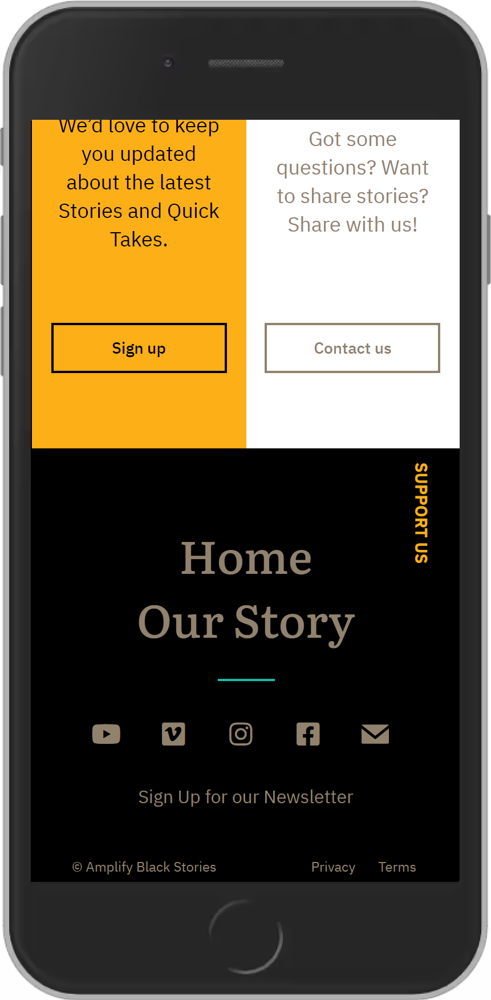
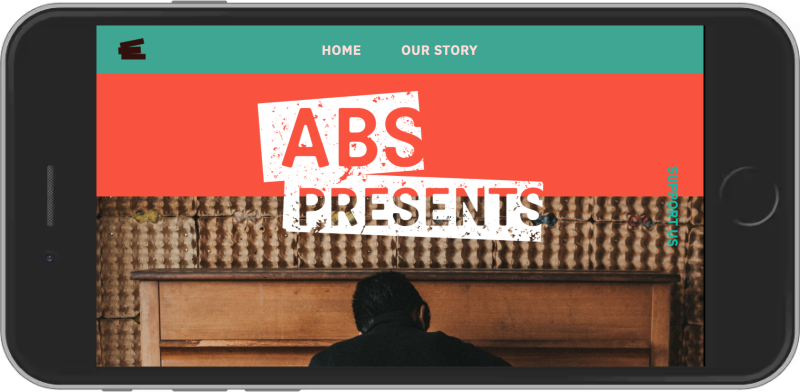

Amplify Black Stories
Static Site
Codebase: Lunacy (Sketch), HTML, CSS, responsive design, and media queries.
As a Freelance Web/Front-End Developer, I worked with another developer and a designer to build this site from scratch. We met with the clients regularly for feedback and worked with the designer on best practices for design and development.
Launched April 2021

Home Screen

About Screen

Home Screen